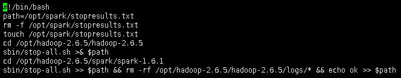
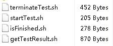
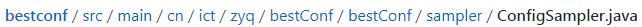
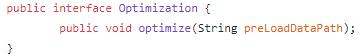

QuickStart¶
Good tools make system performance tuning quicker, easier and cheaper than if everything is done manually or by experience.
Bestconfig can find better configurations for a specific large-scale system deployed for a given application workload.
- Overview
- BestConfig Tuning – Taking Spark as the example SUT
- Implementing your own sampling/tuing algorithms for BestConfig
Overview¶
 Deployment architecture
Deployment architectureHere, “deployment environment” refers to the actual running environment of your applications, while “staging environment” is some environment that is almost the same as the deployment environment but where tests are run without interfering the actual application.

The process of deploying BestConfig
The detailed method of using BestConfig to tune practical system is as the following, which can be showed by a case of spark tuning.
BestConfig Tuning – Taking Spark as the example SUT¶
Step 1. Deploy shells scripts for system under tune¶
There are 9 shell scripts in BestConfig and they are classified into two groups.
One group consists of 5 shell scripts. They are start.sh, isStart.sh, stop.sh, isClosed.sh and terminateSystem.sh and deployed on the system under tune.
The scripts of start.sh and stop.sh deployed on worker and master node are different.
(1) Shell scripts (start.sh and stop.sh) on master node

start.sh(master) – this script will start the system on the master node

stop.sh(master) – this script will stop the system on the master node
(2) Shell scripts (start.sh and stop.sh) on worker node

start.sh(worker) – this script will start the system on the worker node

stop.sh(worker) – this script will stop the system on the worker node
Identical shell scripts on master and worker node

isStart.sh – this script will return OK if the system is successfully started

terminateSystem.sh – this script will terminate the system process on the server

isClosed.sh – this script will return OK if the system is successfully terminated
The other group consists of 4 shell scripts. They are startTest.sh, getTestResult.sh, terminateTest.sh and isFinished.sh and deployed on the test node.


startTest.sh – this script will start a test towards the system under tune

isFinished.sh – this script will return OK if the test is done

getTestResult.sh – this script will return performance metrics regarding the test

terminateTest.sh – this script will terminate the testing process
Step 2. Implement the ConfigReadin and ConfigWrite interfaces¶
As for spark tuning, we need to implement the ConfigReadin and ConfigWrite interfaces as SparkConfigReadin and SparkConfigWrite.
Next, we need to compile SparkConfigReadin and SparkconfigWrite to bytecodes. Then the location(path) of compiled bytecodes need to be added to classpath of BestConfig project.


Step 3. Specify the parameter set for tuning and their ranges¶
- An example of defaultConfig.yaml (specifying the parameters for tuning)

(2) An example of defaultConfig.yaml_range (the valid ranges of parameters)
Step 4. Specify the resource limit and things about the tuning environment (or, sample size/round number)¶
- bestconf.properties

- SUTconfig.properties
Step 5. Start BestConfig¶
Now, you can start BestConfig. BestConfig will automatically run the tuning process without any requirement for user interferences, until the tuning process ends due to resource exhaustion or unhandlable environment errors.
BestConfig will output the best configuration setting into files once the tuning is done.
Implementing your own sampling/tuing algorithms for BestConfig¶
You can also choose to extend and tailor BestConfig for your specific use cases using your own sampling/tuning algorithms.
- To implement your own sampling algorithms –> Extend the
- abstract class of ConfigSampler

- To implement your own tuning algorithms –> Implement the
- interface of Optimization
